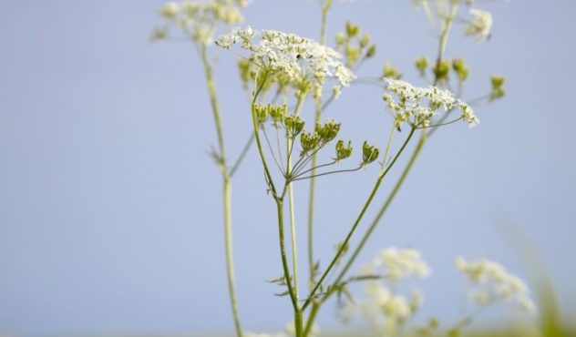
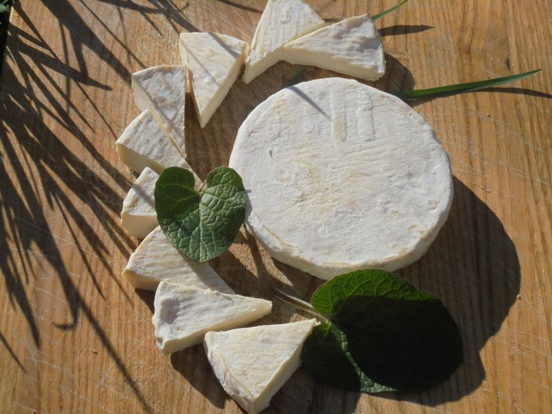
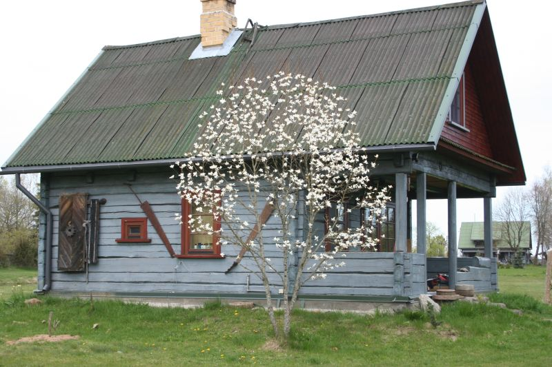
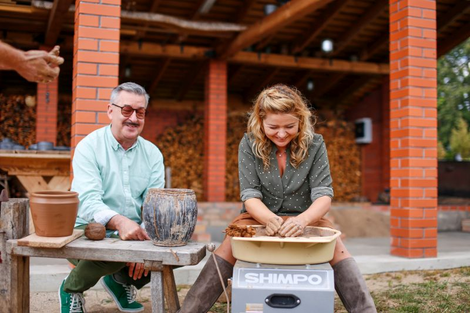
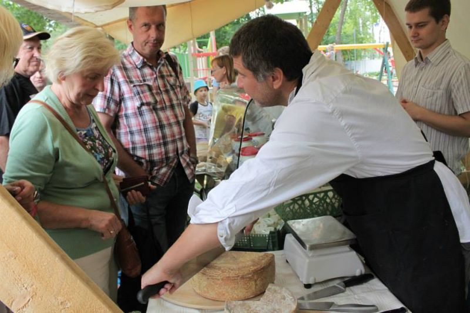

Maršrutai po Lietuvą: DZŪKIJA
Kelionės yra tiesiausias ir paprasčiausias būdas pajusti didelę laimę. Nesvarbu, ar skrisite niolika valandų lėktuvu į tolimiausią pasaulio kraštą, ar automobiliu išnaršysite Lietuvą, o gal išeisite į žygį pėsčiomis, – laimė lyg koks vitaminas kaupsis ir didės. Keliaudami daugiau judame, daugiau juokiamės, daugiau pamatome, daugiau kalbame ir, žinoma, – daugiau ragaujame!

Sūrio ir desertų baras miškų glūdumoje – tokią naujieną šią vasarą pristato Sūrininkų namai Dargužiuose. Ką tik šeimininkų iškepta sūrininko duona su ožkų pieno išrūgomis, tįstanti grietinėlės karamelė, naminiai ledai su kava, ir dar daug staigmenų. Sūrio ir desertų baras Varėnos miške nuo gegužės iki spalio dirba kasdien nuo trečiadienio iki sekmadienio. Ir būtinai turėkit kokią terbelę sūriui – jų čia galima įsigyti keliolikos rūšių: nuo tradicinių lietuviškų saldaus karvių pieno ar keptų varškės iki Prancūzijos pievomis alsuojančių Camembert tipo minkštųjų sūrių. Šįkart tik paskanavome puikiųjų desertų ir nusipirkome sūrių namo, kitą kartą užsisakysime ir degustaciją.

Pienių vynas ir paveikslai. Tame pačiame Dargužių kaime įsikūręs charizmatiškas dailininkas Jonas Daniliauskas, kuris vasarą gamina pienių vyną. Jo darbai eksponuojami Valstybiniame dailės muziejuje Vilniuje, M. K. Čiurlionio meno muziejuje Kaune ir dar keliasdešimtyje Lietuvos bei pasaulio miestų. Užeikit, pasilabinkit, būsit ir pavaišinti, o gal dar kokį paveikslą nusižiūrėsit.

Broniaus Jurgelevičiaus žvėrynėlis. Mažas ir jaukus, prieš važiuodami būtinai paskambinkite ir susitarkite dėl apsilankymo. Žvėrynėlyje vaikšto gandras, kudakuoja margaplunksnės vištos, šeimininkauja spalvingas povas, aptvare ratus suka vilkai, o kalakutas lyg auklė augina fazanus. Taip pat čia galima pamatyti Šiaurės Amerikos meškėną, stirną, lapę. Jei važiuosite keliu Vilnius–Varėna, už Naujųjų Valkininkų ieškokite medinės nuorodos „Karpiškių žvėrynėlis 0,6 km“ į dešinę pusę ir sukite.

Kaip smagu puodus lipdyti, kai padeda puikus keramikas dzūkas Džiugas Petraitis. Susipažinome, kai filmavome laidą „Keliauk ir ragauk. Lietuva“. Pasirodo, būtent dzūkai puodus dega seniausiu pasaulyje būdu – atrodo jie kaip metaliniai, o iš tiesų tai juodoji keramika. Būtinai apžiūrėkite įvairias krosnis, sužinokite, kaip pušies smalėkas puodą ar kitą lipdinį juodai nudažo. Labai smagu, ypač – su vaikais.

Rugpjūčio 11 d. šeštadienį, o važiuokite į Druskininkus (tik dar nepaskelbė kada). Čia vyks kasmetis Sūrių festivalis – savo gaminius atsiveš sūrininkai mėgėjai ir profesionalai, veiks mugė, o galiausiai bus išrinktas sūris „karalius“ – skaniausias ir nuostabiausias.